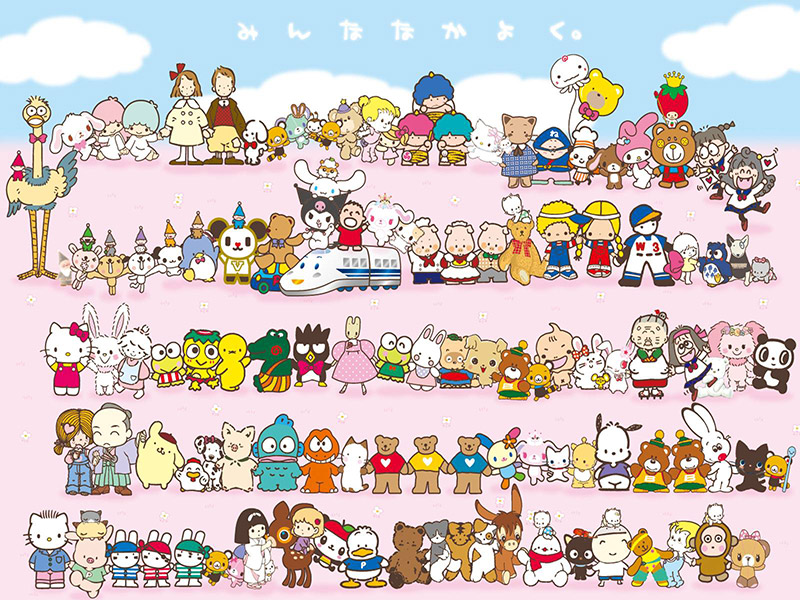

Hello Kitty and Friends
Sanrio Characters
Hello Kitty is not the only sanrio character that is popular and cute. There are mnay other characters that are popular and unique such as kuromi, my melody, chococat, and more! There currently are about 450 characters created by Sanrio to date.
- My Melody
- Kuromi
- Keroppi
- Cinamaroll
- Chococat
- Hello Kitty
- Tuxedo Sam
- Batz - Maru

Creation date of some Sanrio characters
- Coro Chan- 1973
- Hello Kitty - 1974
- Little Twin Stars - 1975
- My Melody - 1975
- The Strawberry King - 1975
- Button Nose - 1978
- Tuxedo Sam - 1979
- My Sweet Piano - 1980
- Mina No Tabo - 1984
- Zashikibuta - 1984